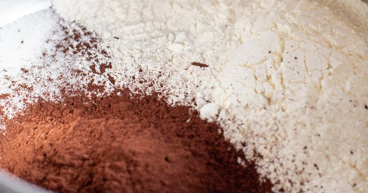
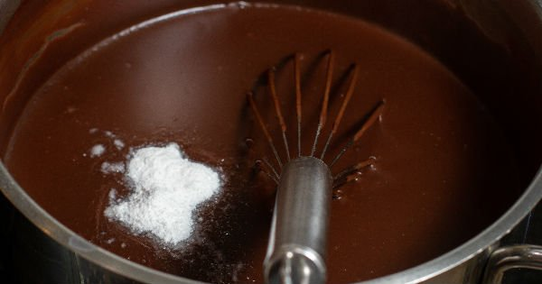
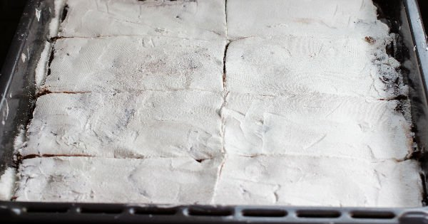

Bir tencerede un, toz şeker ve kakaoyu karıştırıp, üzerine yavaşça süt ilave edip sürekli karıştırarak orta ateşte pişirin.
Koyulaşmaya ve baloncuk çıkarmaya başlayan muhallebinin içerisine tereyağı ekleyin ve tekrar karıştırın.

Koyulaşan ve pişen muhallebiyi ocaktan alamadan önce vanilini ekleyip karıştırın ve ocaktan alın.
Fırın tepsisine Hindistan cevizini yayın.

Fırın tepsisine Hindistan cevizini yayın.

1 gün bekleyen muhallebiyi 8 eşit dikdörtgen olacak şekilde kesin ve krem şantiyi tüm yüzeye yayın.
Bir spatula yardımıyla dikdörtgen parçaları yavaşça rulo haline getirin.Üzerine, arzuya göre antep fıstığı serpiştirerek servis edin.